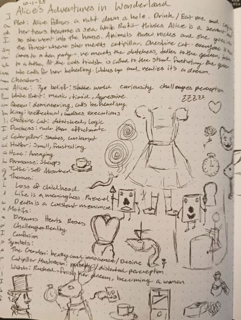

Research
I began this project by researching Alice’s Adventures in Wonderland. I listened to the book, studied early covers and illustrations, and identified recurring themes and motifs. I also explored visual elements that are instantly recognizable as “Wonderland,” such as the White Rabbit, the tea party, and the playing cards. In addition, I examined the characters and what makes the story so distinctive and imaginative.
Thumbnails
After completing my research, I created both typographic and illustration based thumbnails. My goal was to develop at least ten variations of typographic and illustration based covers and explore different ways to visually combine key aspects of Alice’s Adventures in Wonderland. For example, I experimented with turning a teacup into Alice’s hat, visualizing the idea of “following the White Rabbit,” and representing the theme of confusion through type layout and composition.


Development
From my thumbnails, I selected the eight strongest concepts, four typographic and four illustrative, to develop further. I chose fonts and colors that reflected the story’s whimsical tone and began refining the designs in Adobe Photoshop and Illustrator. During this stage, I discovered that not everything translates perfectly from sketch to digital form, which required several adjustments, such as repositioning the title and refining color balance.


Revisions
Of the 8 concepts I decided to revise 1 concept for both the typography and illustration. The illustration that I decided to improve was the one where alice is meant to be in the shape of a lock and the garden. I decided to change the color of the font and make the rosebushes look smaller, using one of the original illustrations of Alice. I think that this worked better, but was still not great. So I decided to focus on her silhouette in a lock, which conceptually worked much better. I then was able to start focusing on the layout and colors.


The typographic design I decided to revise was the Cheshire's smile. I mostly focused on improving the warping of the text. For the original design, I just manipulated each letter, but it didn't really create the shape that I wanted. So I explored a couple of different ways that you can manipulate text and I learned about the Distort mesh warp. This worked much better, but the lowercase design wasn't working because it doesn't create clean lines. So I changed the lettering to be all caps, which helped to create strong lines.


Variations
Most of the variation that I did in the Illustrated cover was in the layout. While I was in the process of working on the layout, I changed the outline for Alice, fitting her more evenly inside of the lock, as well, and making it look like she is looking down. This allowed her to fit much better inside of the shape. Then I mostly focused on finding a font that had angles that better matched the keyhole shape.


For the variations of the typographic design, I focused on the text lock-up of the title. I decided to try to see if I could arrange the "in" inside of the text to see if that would work in the lock-up. This didn't work, because the in didn't really have anywhere to align to. Then I decided to see if a straight smile would have anymore clarity, and which the shape does look nice, it doesn't have the uneasiness or cat like appearance that I associated with wonderland. So I decided to reduce the dramatic shape, but still keep the bump for the smile. I also decided to reduce the size of the "in" for hierarchy purposes.


Finalizing
For my finalized illustration cover I took the time to add the rabbit,which could be running to or from Alice. This added another layer of depth. I also decided to add something in Alice's hand because it doesn't make sense to have her look down at nothing. I decided that the mushroom worked the best because while Alice herself is what she needed, she focused on outside help, often times it was a food one of the common ones being the mushroom that grows or shrinks. For my finalized typographic cover I decided to use the less dramatic shape of the smile, and move the title down and the author's name up to the tope of the page.